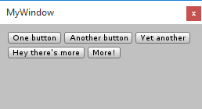

EditorGUIUtility.GetFlowLayoutedRects
Parameters
| rect | Area where to layout the items. | |
| style | Style for the items. | |
| horizontalSpacing | Extra horizontal spacing between successive items. | |
| verticalSpacing | Extra vertical spacing between item rows. | |
| items | Strings to layout. |
Returns
List<Rect> List of rectangles for the passed items.
Description 描述
Layout list of string items left to right, top to bottom in the given area.

Example of buttons positioned with GetFlowLayoutedRects.
using UnityEngine; using UnityEditor; using System.Collections.Generic;
public class MyWindow : EditorWindow { [MenuItem("Window/My Window")] static void OpenMyWindow() { EditorWindow.GetWindow<MyWindow>(true); }
void OnGUI() { // area to layout our items in var rect = new Rect(10, 10, position.width - 20, position.height - 20); // items to layout var items = new List<string> { "One button", "Another button", "Yet another", "Hey there's more", "More!" }; // get resulting rectangles of items var style = EditorStyles.miniButton; var boxes = EditorGUIUtility.GetFlowLayoutedRects(rect, style, 4, 4, items); // do actual UI for them for (var i = 0; i < boxes.Count; ++i) { GUI.Button(boxes[i], items[i], style); } } }